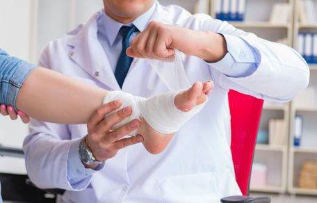
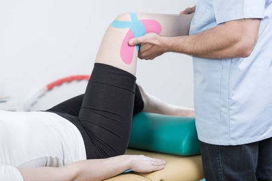
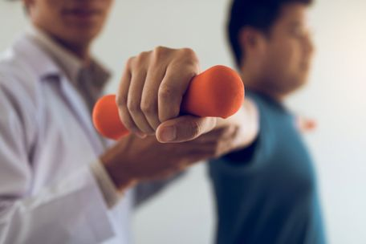

Terapias especializadas para cada necesidad, con los más altos estándares de calidad
Descubre nuestra amplia gama de servicios terapéuticos

¿Tienes dolores musculares desde hace algunas semanas y no sabes qué hacer para que se te quiten? Es posible que necesites una sesión de fisioterapia, así que, si vives en La Barca de la Florida, en Jerez de la Frontera, te podemos ayudar desde Iván Lora Fisioterapia. Trabajamos con herramientas de primer nivel y ofrecemos unos servicios que destacan por su calidad en todos los sentidos.
Reservar Consulta
Es normal que de vez en cuando suframos algún tipo de problema muscular, ya que, por lo general, llevamos una vida muy ajetreada. El trabajo, la vivienda, las actividades de ocio o la vida en pareja forman parte de nuestro día a día y, con el paso del tiempo, podemos notar el desgaste en los músculos.
De hecho, no es necesario tener una lesión mientras hacemos deporte para ir a un fisioterapeuta en La Barca de la Florida y Jerez de la Frontera, puesto que la carga de la rutina también pesa en nuestro sistema muscular. Por este motivo, si te sientes con dolores de algún tipo, te animamos a pedir tu cita previa para que te podamos atender con todas las comodidades.
Reservar Consulta
Con la fisioterapia conseguimos prevenir, mantener y recuperar la funcionalidad de nuestro cuerpo mediante una acción que tiene un doble beneficio. Por un lado, se tratan las dolencias existentes y, por otro, se refuerza la consistencia de los músculos con una acción preventiva.
Todas estas labores las llevamos a cabo desde nuestra empresa, donde contamos con profesionales cualificados y experimentados que localizan el foco del dolor y dan masajes concretos para eliminar contracturas o hacer tratamientos de recuperación y rehabilitación. Tan solo has de llamarnos para comentarnos el tipo de dolencia que tienes y haremos lo posible para que tus músculos se recuperen.
Reservar ConsultaLlevamos muchos años en este sector, por lo que sabemos qué soluciones pueden necesitar nuestros clientes en materia de podología.
Realizamos un análisis exhaustivo para identificar anomalías en los pies y determinar las plantillas necesarias para caminar o entrenar.
Contáctanos para realizar un servicio que utiliza tecnología avanzada, diagnosticando dolencias en el pie y ofreciendo soluciones para caminar o entrenar sin dolor.
Nos especializamos en diseñar plantillas deportivas que se adaptan a la fisionomía del pie, mejorando la comodidad y sensación durante cualquier actividad deportiva donde los pies son esenciales.
Contamos con máquinas avanzadas para analizar la marcha de los pacientes, identificar su dolor y ofrecer soluciones, ayudando a resolver problemas como la fascitis plantar.
Nuestros especialistas están listos para evaluar tu caso y recomendarte la mejor opción
Solicitar Evaluación Inicial